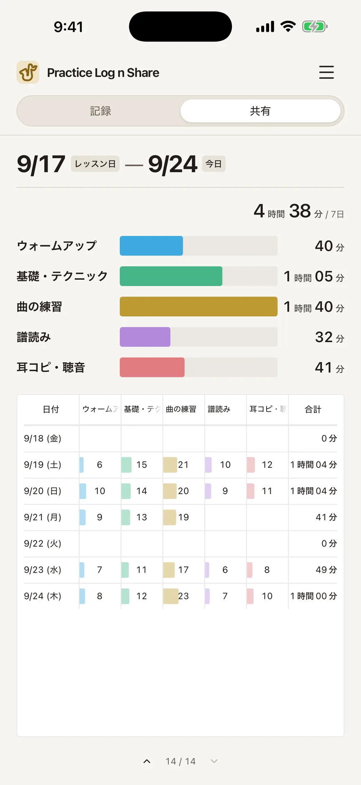
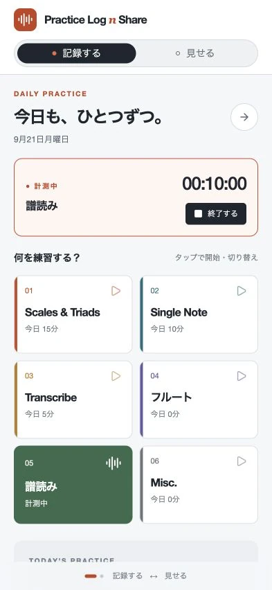
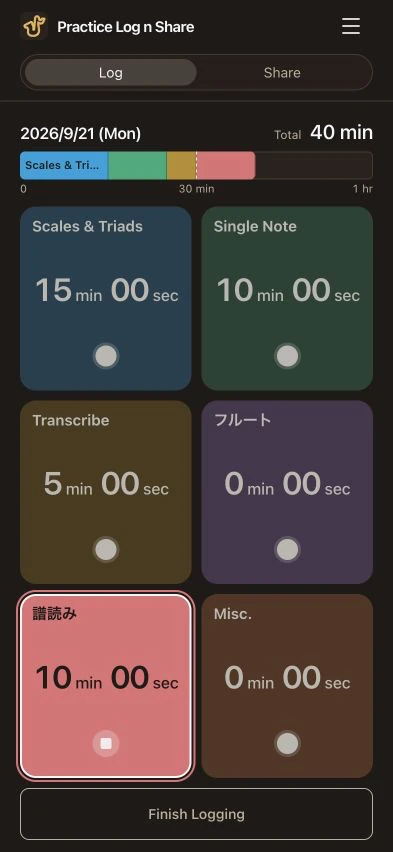
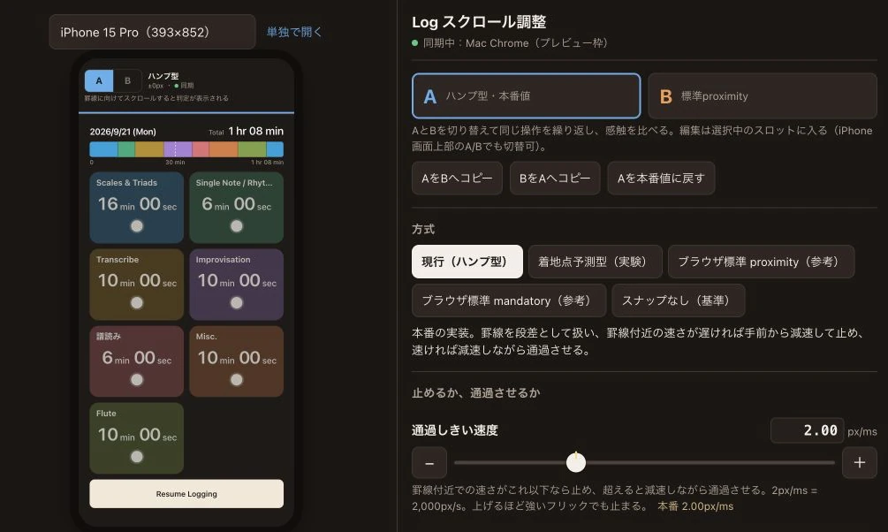

Practice Log n Share
Una app para registrar y compartir la práctica musical diaria
septiembre de 2026


1. Visión general
Una app para iPhone que permite registrar el tiempo de práctica con un toque mientras se sostiene el instrumento y mostrar después el registro al profesor durante la clase. Las pantallas Log y Share conectan la práctica cotidiana con las conversaciones en clase.
Definí el problema, diseñé la experiencia y la interfaz, afiné las interacciones en un iPhone, implementé la app y preparé los materiales del proyecto. Colaboré con la IA en la implementación y tomé personalmente las decisiones finales sobre las pantallas y las interacciones.
Utilicé la app en mi propia práctica y en mis clases. Mi profesor comentó que resultaba fácil ver lo que había practicado y pidió registros más detallados (comentario parafraseado).
2. Contexto y dificultades
Toco el saxofón tenor como afición y recibo clases cada dos semanas. Cuando mi profesor me preguntaba cómo iba la práctica, no tenía una forma concreta de mostrar qué había practicado ni durante cuánto tiempo.
Con el saxofón colgado de la correa del cuello, escribir en papel durante la práctica resulta incómodo. A medida que se acumulan las páginas de un diario de práctica, los registros se dispersan.
Las aplicaciones de seguimiento del tiempo que probé permitían iniciar el cronómetro con un toque. La dificultad era convertir esos registros en algo que mi profesor pudiera comprender de un vistazo.
3. Principios de diseño
Quería que registrar la práctica y compartirla en clase formaran un proceso continuo. Dos requisitos guiaron la distribución de las pantallas y las interacciones.
Registrar la práctica de forma sencilla
Registrar el tiempo con un toque en una categoría mientras se sostiene el instrumento.
Evitar tener que editar antes de la clase
Organizar automáticamente los registros para poder mostrar qué he practicado y durante cuánto tiempo, sin editarlos antes.
4. Funciones y diseño
Unir los controles y el tiempo de práctica en una tarjeta
Toca una tarjeta de categoría para iniciar el cronómetro, otra para cambiar de categoría o la misma para detenerlo. Cada tarjeta destaca el tiempo de práctica de hoy de esa categoría y solo muestra un color más vivo y un borde blanco mientras su cronómetro está en marcha. Los controles y el estado del registro están en el mismo lugar.
La categoría, el tiempo de práctica de hoy y el estado del cronómetro se ven en la misma tarjeta.
Ver la distribución de la práctica sin desplazarse lateralmente
La app resume automáticamente la práctica desde la clase anterior, de modo que no es necesario editar los registros antes de compartirlos. En la tabla diaria, prioricé mostrar todas las categorías a la vez, incluso a costa de reducir el tamaño del texto. Así puedo enseñar la pantalla a mi profesor y conversar sobre cómo distribuyo el tiempo de práctica.

Hacer de la práctica acumulada un motivo para continuar
Hice posible ver tanto el progreso de hoy como la práctica acumulada durante meses y años. También espero que mostrar a mi profesor el esfuerzo realizado me ayude a mantener la motivación para practicar.
Vista diaria: llenar la barra, tomando una hora como referencia
La barra de práctica de hoy abarca inicialmente de cero a una hora. Acumula el tiempo dedicado a cada categoría con un color distinto. Esperaba que llenar la barra me diera un motivo para seguir practicando.
Vista a largo plazo: celdas verdes para mostrar el progreso diario
Cada celda representa un día y los tonos de verde indican cuánto tiempo practiqué. La cuadrícula facilita ver cómo se acumula la práctica durante meses y años. Quería que el crecimiento del registro me animara a seguir practicando.
5. Proceso de desarrollo
Definir mediante investigación las funciones de registrar y compartir
Utilicé ChatGPT para investigar aplicaciones existentes y aclarar el problema y el enfoque. En la investigación que hice entonces, encontré aplicaciones de seguimiento del tiempo, pero ninguna función de compartir adecuada para comunicarme con mi profesor. Desarrollé el concepto a través de esa conversación, redacté una especificación y se la entregué a Codex para implementar la primera versión.
Afinar la primera versión para mantener los controles a la vista
Probé personalmente la primera versión generada por IA y pedí cambios en la interfaz y la experiencia de usuario. Integré en las tarjetas de categorías la información del cronómetro y el control para detenerlo, antes separados, y di más protagonismo al tiempo de práctica de hoy. También exploré distribuciones que mantuvieran todo el panel de control visible en pantalla.


Versión inicial


Versión revisada
La versión revisada integra la información del cronómetro y el control para detenerlo en las tarjetas de categorías.
Utilicé un fondo negro para una pantalla que permanece abierta durante la práctica, con colores de categorías que buscaban darle un aspecto alegre.
Comparar la sensación de desplazamiento antes de elegir
Las palabras y las imágenes no bastaban para conseguir la sensación que buscaba: un movimiento suave que se detuviera con firmeza en su sitio. Construí con IA una herramienta de ajuste para probar personalmente distintos métodos de desplazamiento y valores de parámetros. En un iPhone comparé dónde se detenía el desplazamiento, buscando una posición que mantuviera visible todo el panel de control. Elegí el ajuste nativo del navegador a puntos de parada y lo utilicé en la app.


Utilizar revisiones independientes y decidir qué adoptar
Repetí un ciclo de revisión con dos sesiones independientes de IA. Examinaba los problemas y mejoras sugeridos por Claude Code y después pedía a Codex que los verificara y aplicara las correcciones necesarias. Algunas sugerencias se alejaban de la interfaz y la experiencia que buscaba, por lo que decidía qué adoptar según la finalidad de la app y la sensación al usarla.
Repetí este proceso unas 15 veces. Cuando las revisiones de IA dejaron de identificar defectos importantes, lo consideré uno de los motivos para dar por concluida esta ronda de mejoras.
6. Experiencia y próximos pasos
Abrir la app pasó a formar parte del inicio de la práctica
Instalé la app en mi iPhone y la utilicé en mi práctica diaria para comprobar la facilidad de registrar el tiempo con un toque mientras sostenía el instrumento. Abrirla al comenzar se convirtió en un hábito positivo. Revisar el orden de las actividades y cómo distribuyo el tiempo, teniendo presente la fecha de la siguiente clase, me ayuda a planificar la práctica.
Mi profesor pidió registros más detallados
Mi profesor comentó que era fácil ver lo que había practicado y que registrar los tipos de escala haría la app más útil (comentario parafraseado). Estas observaciones proceden de mi propia práctica y de las clases con mi profesor.
Próximo paso: más detalle sin complicar el registro
Estoy considerando subcategorías, como «Escalas pentatónicas» dentro de «Escalas», mientras exploro cómo mantener la sencillez del registro. Para la pantalla Share también considero una jerarquía de categorías y subcategorías que sustituya a la tabla diaria.